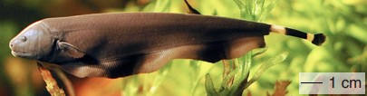

Multi-Agent System Formation Control
July 2016 - December 2019
- Developed new formation control methods, provided mathematical proofs.
- Conducted numerical and experimental validation.

Aerial Robotic Network for Agricultural Applications
July 2016 - October 2019
- Designed and built quadrotor fleet from scratch.
- Developed autonomous flight control firmware on MCU and flight control/monitor applications on PC.
- Developed distributed control network for quadrotors.
(Funded by the LSU Economic Development Assistantship (EDA) program.)

Computational Molecule Synthesis
October 2015 - May 2016
- Developed open-source software which can decompose large molecules to small bio-active fragments, then use fragments to generate target molecules or new molecules for drug design.

Multi-rotor Copter in Agriculture
February 2015 - June 2015
- Developed an application to process aerial images.
- Optimized the software for better processing speed.
Bionic Four-Tail Fin UUV (Mimic Dragonfly)
August 2011 – January 2013
- Developed program on MCU for motor control, developed remote control and wireless data transfer programs on PC and MCU for the bionic UUV with four oscillatory tail fins. The tail fins were designed to mimic the motion pattern of a dragonfly.

Bionic Long Undulatory Fin UUV (Mimic Black Ghost Knifefish)
November 2011 – June 2012
- Designed and built a UUV to mimic the propulsion pattern of black ghost knifefish.
- Developed program on Arduino for the UUV.
- Studied the effects of the frequency and amplitude of the swaying fin ray, wave number in the fin surface, and the speed of the incoming flow on propulsion thrust.
Bionic Double-Tail Fin UUV
September 2011 – May 2012
- Conducted experiments to optimize the performance of the double tail fin UUV.
- Developed a whole system to automatically conduct experiment, collect and process data, and plot results.
Flow Trajectory After Passing Dual Circular Cylinder
October 2011 – November 2011
- Designed and built an adjustable dual circular cylinder model for the fluid experiment.
- Conducted experiments with hydrogen bubbles, laser beam, and high resolution high speed camera to study the water flow trajectory after passing dual circular cylinder.

Composite Bionic Actuators
April 2011 – August 2011
- Assisted with motion pattern design.
- Developed programs on Arduino for the actuators.
Robo-Game Competition of USTC (2010)
June 2010 – October 2010
- Participated in prototyping and building of autonomous and manned robots.
- Developed program on MCU for the autonomous robot.